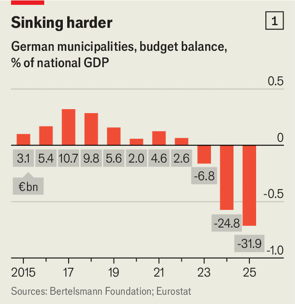

Why Germany’s cities are going broke
Bad news for residents, good news for the far right’s electoral chances
June 25th 2026

IT DOES NOT take long for a visitor to Ingolstadt, a medium-sized city in Bavaria, to notice that this is Audi town. Spot the Audi health-insurance booth near the town hall, the carmaker’s splendid museum or the ads for its summer concert season, which opens this weekend. Meet a local, and chances are they work at the Audi plant—the firm employs 40,000 people here—or are related to someone who does. The success of Audi drove Ingolstadt’s growth from a sleepy town of 30,000 after the second world war to 145,000 today.
And it is the struggles of Audi, where profits and the workforce are shrinking, that help explain why the city has fallen into a deep hole. Business-tax revenues have halved in just a few years, thanks in large part to the woes of Audi and Volkswagen, its parent company. So tight is the squeeze that earlier this year the Upper Bavarian government rejected Ingolstadt’s budget, banning the city from making new investments. Marquee projects, such as the renovation of the city’s celebrated brutalist theatre building, are on ice. Pupils had to be removed from one dilapidated school because the city could not afford to repair it. “Audi is a blessing for our city, and also a risk,” says Michael Kern, the mayor.
The volatility of municipal financing has bound the fates of many German cities to local business. In good times some swam in money: one town with a Daimler plant near Stuttgart paved its pedestrian crossings with Carrara marble. But when industry sneezes, cities fall ill—and the bug now extends beyond post-industrial spots like the Ruhr or Saarland. Towns in wealthy Baden-Württemberg have been walloped by the car sector’s woes. The troubles of Ludwigshafen, one of Germany’s most indebted cities, are those of basf, the local chemicals giant.

But even towns with a broader economic base are staring into the abyss. Few have escaped the fiscal trap of revenues failing to keep pace with exploding spending. A new report from the Bertelsmann Foundation finds that last year the budget deficits of Germany’s 10,000-odd municipalities amounted to a record €32bn ($36bn), up by almost 30% in just one year (see chart 1). Almost all expect it to get worse.
The crisis is the worst in the history of the federal republic, says René Geissler, a professor of public administration at the Technical University of Applied Sciences in Wildau. He cites three factors: surging inflation, especially in construction; personnel costs; and onerous laws passed by the Bundestag, especially on youth and disabled benefits, that municipalities must meet. Such mandatory expenditures now account for 80% of Ingolstadt’s budget, forcing brutal cuts to discretionary outlays. In poorer towns the squeeze is tighter. Mr Geissler says he expects stressed municipalities to make “under-the-radar cuts” to help the numbers add up.

Consequences show up everywhere. Bayreuth has cancelled a party to mark the 150th anniversary of Richard Wagner’s first festival. Berlin’s skint boroughs are struggling to cope with an invasion of toxic hairy caterpillars. Like desperate workers pawning jewellery before payday, some cities have turned to Kassenkredite, short-term loans, to pay their bills. And across Germany schools, roads and sports halls are falling into disrepair as the brakes are pressed on capital spending (see chart 2). The municipal-investment backlog now stands at a record €231bn. Saying it was “three minutes to midnight”, on June 22nd mayors across Germany held public events to declare themselves at the limit. “We can manage this year, but beyond that many cities will have their backs against the wall,” says Martin Wilhelm, the treasurer of Offenbach, a satellite town of Frankfurt.
What’s to be done? Municipalities want the federal government to stick to a rule of “who orders, pays”; ie, to provide funding for any new law whose costs they must bear. Those without rainy-day funds also want €30bn in short-term relief. The federal government, itself in a tight fiscal spot, has offered little. But so grim is the situation, says Henrik Scheller, a public-finance expert at the German Institute of Urban Affairs, that help is likely later this year. If not, “we could see a kind of revolution.”
That does not feel imminent in Ingolstadt. But Michelle and Christian, a local couple, say they notice small signs of decay, from libraries soliciting donations to a city festival that had its funding cut. Elsewhere, many fear a deteriorating public realm could help the far-right Alternative for Germany. “Every leaking school roof that is not repaired for three years boosts the right-wing populists,” says Marc Grandmontagne, Ingolstadt’s education and culture chief. Perhaps that will concentrate minds in Berlin. ■
To stay on top of the biggest European stories, sign up to Café Europa, our weekly subscriber-only newsletter.